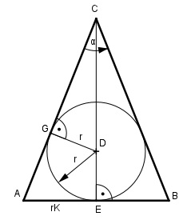

Aufgabe 178 Einem geraden Kegel mit dem Öffnungswinkel α = 31,6° ist eine Kugel mit dem Durchmesser d = 55,4 cm einbeschrieben . Wie groß ist das Volumen V des Kegels?

Im Dreieck GDC: r = d/2 = 55,4/2 cm = 27,7 cm r sin α/2 = ---- | *DC DC DC * sin α/2 = r |:sin α/2 r 27,7 cm 27,7 cm DC = --------- = ------------- = ------------ = sin α/2 sin 31,6°/2 0,2723 = 101,7 cm EC = DC + r = 101,7 cm + 27,7 cm = 129,4 cm Im Dreieck AEC: rK tan α/2 = ----- |*EC EC rK = EC * tan α/2 = 129,4 cm * tan 31,6°/2 = = 129,4 cm * 0,2829 = 36,6 cm rK2 * π * EC V = -------------- = 3 36,62 cm2 * π * 129,4 cm = --------------------------- = 3 = 181428 cm3 = 181,4 dm3